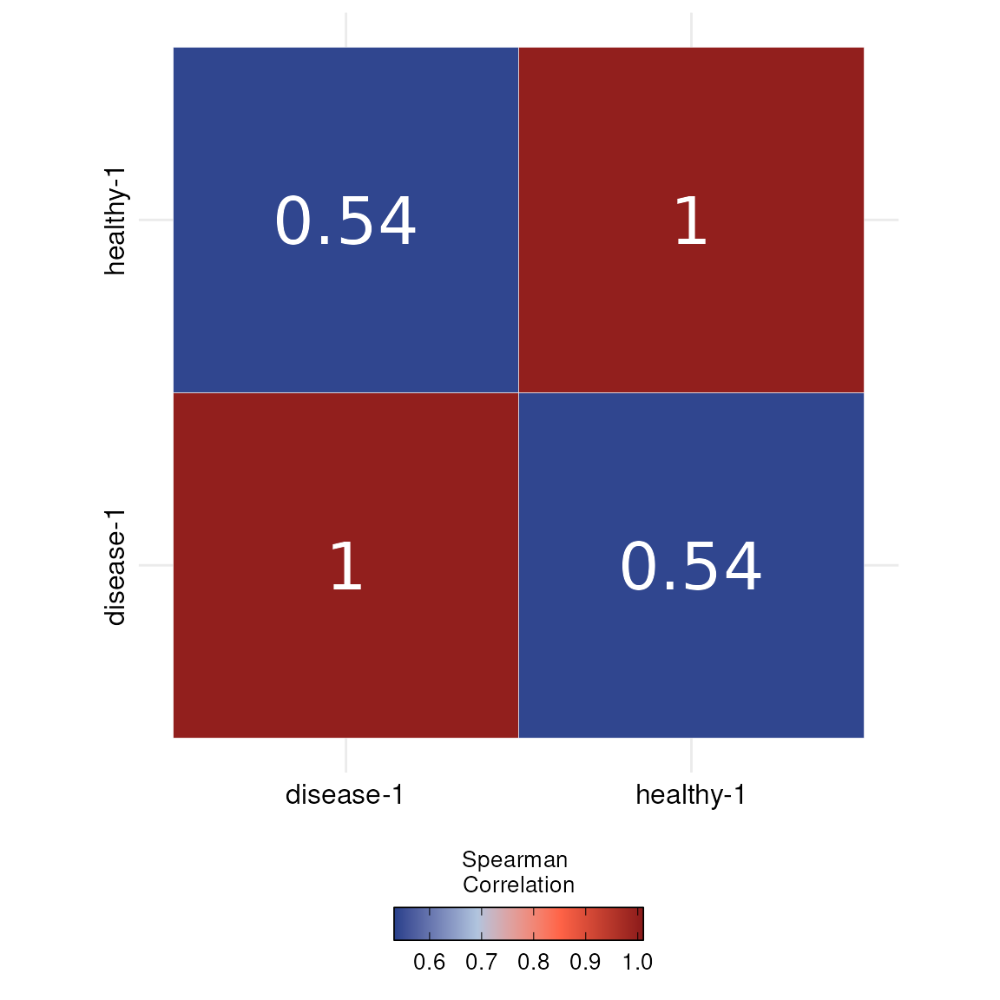

Quality control of sc/snRNA-seq
Mariano Ruz Jurado
Goethe UniversitySource:
vignettes/DOtools.Rmd
DOtools.RmdInstallation
DOtools is an R package distributed as part of the Bioconductor project. To install the package, start R and enter:
install.packages("BiocManager") # WORK iN PROGRESS
BiocManager::install("DOtools")Alternatively, you can instead install the latest development version from GitHub with:
install.packages("devtools")
devtools::install_github("MarianoRuzJurado/DOtools")Usage
DOtools contains different functions for processing and visualizing gene expression in scRNA/snRNA experiments:
In this vignette we showcase how to use the functions with public available data.
Libraries
DOtools can be imported as:
Quality control
DOtools
The DO.Import() function provides a streamlined pipeline
for performing quality control on single-cell or single-nucleus RNA
sequencing (sc/snRNA-seq) data. It takes as input a list of .h5 files
generated by e.g. CellRanger or STARsolo, along with sample names and
metadata.
During preprocessing, low-quality genes and cells are filtered out based on specified thresholds. Genes expressed in fewer than five cells are removed. Cells are filtered according to mitochondrial gene content, number of detected genes, total UMI counts, and potential doublets. The function supports doublet detection using scDblFinder. Thresholds for mitochondrial content (e.g., 5% for scRNA-seq and 3% for snRNA-seq), gene counts, and UMI counts can be defined to tailor the filtering.
After filtering, samples are merged into one Seurat or SingleCellExperiment object, followed by log-normalisation, scaling, and the identification of highly variable genes. To help assess the effect of quality control, violin plots showing distributions of key metrics before and after filtering are automatically generated and saved alongside the input files. A summary of removed genes and cells is also recorded.
To show how the quality control works, we are going to use a public dataset from 10X from human blood of healthy and donors with a malignant tumor:
base <- DOtools:::.example_10x()
paths = c(file.path(base, "healthy/outs/filtered_feature_bc_matrix.h5"),
file.path(base, "disease/outs/filtered_feature_bc_matrix.h5"))
SCE_obj <- DO.Import(pathways = paths,
ids = c("healthy-1", "disease-1"),
DeleteDoublets = TRUE,
cut_mt = .05,
min_counts = 500,
min_genes = 300,
high_quantile = .95,
Seurat=FALSE) # Set to TRUE for Seurat objectWe can now check the quality before introducing filterings:
prefilterplots <- system.file("figures", "prefilterplots-1.png", package = "DOtools")
pQC1 <- magick::image_read(prefilterplots)
plot(pQC1)
And after:
postfilterplots <- system.file("figures", "postfilterplots-1.png", package = "DOtools")
pQC2 <- magick::image_read(postfilterplots)
plot(pQC2) We observed that most cells were removed due to increased mitochondrial
content. Depending on the experimental design, the mitochondrial content
threshold can be adjusted to retain a higher number of cells, if
minimizing cell loss is of relevance.
We observed that most cells were removed due to increased mitochondrial
content. Depending on the experimental design, the mitochondrial content
threshold can be adjusted to retain a higher number of cells, if
minimizing cell loss is of relevance.
The DOtools package provides a slim object of this data set.
Please feel free, to use the one created from DO.Import for prettier
results or this slim downed version. We can observe how similar the
samples are through running a correlation analysis.
#Making sure we have a save folder
base <- tempfile("my_tempdir_")
dir.create(base)
SCE_obj <- readRDS(system.file("extdata", "sce_data.rds", package = "DOtools"))
DO.Correlation(SCE_obj)
#> Warning: `PackageCheck()` was deprecated in SeuratObject 5.0.0.
#> ℹ Please use `rlang::check_installed()` instead.
#> ℹ The deprecated feature was likely used in the Seurat package.
#> Please report the issue at <https://github.com/satijalab/seurat/issues>.
#> This warning is displayed once every 8 hours.
#> Call `lifecycle::last_lifecycle_warnings()` to see where this warning was
#> generated.
#> Warning: The `slot` argument of `SetAssayData()` is deprecated as of SeuratObject 5.0.0.
#> ℹ Please use the `layer` argument instead.
#> ℹ The deprecated feature was likely used in the Seurat package.
#> Please report the issue at <https://github.com/satijalab/seurat/issues>.
#> This warning is displayed once every 8 hours.
#> Call `lifecycle::last_lifecycle_warnings()` to see where this warning was
#> generated.
#> Scale for fill is already present.
#> Adding another scale for fill, which will replace the existing scale.
Data integration
After quality control the prefered integration method can be chosen
within Seurat’s IntegrateLayers function. Additionally, we
implemented a new wrapper function for the scVI integration from the scvi-tools package.
After the integration completes, we run the Leiden algorithm to find
clusters and generate UMAP embeddings.
### ADDITIONAL STEPS FOR SCE OBJECTS, THESE STEPS WILL BE PERFORMED AUTOMATICALLY FOR SEURAT OBJECTS IN DO.IMPORT
### SKIP IF YOU USE SEURAT OBJECT FROM DO.IMPORT()
Seu_obj <- as.Seurat(SCE_obj)
Seu_obj[["RNA"]] <- split(Seu_obj[["RNA"]], f = Seu_obj$orig.ident)
Seu_obj <- FindVariableFeatures(Seu_obj)
#> Finding variable features for layer counts.healthy-1
#> Finding variable features for layer counts.disease-1
Seu_obj <- ScaleData(object = Seu_obj)
#> Centering and scaling data matrix
Seu_obj <- RunPCA(Seu_obj, verbose = FALSE, reduction.name = "PCA")
Seu_obj <- JoinLayers(Seu_obj)
Seu_obj[["RNA"]] <- split(Seu_obj[["RNA"]], f = Seu_obj$orig.ident)
#> Splitting 'counts', 'data' layers. Not splitting 'scale.data'. If you would like to split other layers, set in `layers` argument.
#####
#Integration through Seurat
Seu_obj <- IntegrateLayers(object = Seu_obj,
method = CCAIntegration,
orig.reduction = "PCA",
new.reduction = "INTEGRATED.CCA",
verbose = TRUE)
#> Finding all pairwise anchors
#> Running CCA
#> Merging objects
#> Finding neighborhoods
#> Finding anchors
#> Found 2607 anchors
#> Merging dataset 2 into 1
#> Extracting anchors for merged samples
#> Finding integration vectors
#> Finding integration vector weights
#> Integrating data
#After Integration we join the layers
Seu_obj <- JoinLayers(Seu_obj)
#(Optional) convert back to SCE object if you prefer that data class
SCE_obj <- as.SingleCellExperiment(Seu_obj)
#(Optional) Integration with scVI-Model
Seu_obj <- DO.scVI(sce_object = Seu_obj,
batch_key ="orig.ident",
layer_counts = "counts",
layer_logcounts = "logcounts")After the integration finished, both corrected expression matrices can be found saved in the Seurat object and can be used for cluster calculations and UMAP projections. In this case, we will continue with Seuratv5 CCA Integration method.
Seu_obj <- FindNeighbors(object = Seu_obj, reduction = "INTEGRATED.CCA", dims = 1:50) #change dims accordingly
#> Computing nearest neighbor graph
#> Computing SNN
Seu_obj <- FindClusters(Seu_obj, resolution = 0.3, algorithm = 4, random.seed = 1234)
Seu_obj <- RunUMAP(object = Seu_obj, reduction = "INTEGRATED.CCA", reduction.name = "UMAP", dims = 1:50)
#> 07:33:41 UMAP embedding parameters a = 0.9922 b = 1.112
#> 07:33:41 Read 2807 rows and found 50 numeric columns
#> 07:33:41 Using Annoy for neighbor search, n_neighbors = 30
#> 07:33:41 Building Annoy index with metric = cosine, n_trees = 50
#> 0% 10 20 30 40 50 60 70 80 90 100%
#> [----|----|----|----|----|----|----|----|----|----|
#> **************************************************|
#> 07:33:41 Writing NN index file to temp file /tmp/Rtmp3adQTx/file26f22c8c860a
#> 07:33:41 Searching Annoy index using 1 thread, search_k = 3000
#> 07:33:42 Annoy recall = 100%
#> 07:33:43 Commencing smooth kNN distance calibration using 1 thread with target n_neighbors = 30
#> 07:33:45 Initializing from normalized Laplacian + noise (using RSpectra)
#> 07:33:45 Commencing optimization for 500 epochs, with 130642 positive edges
#> 07:33:45 Using rng type: pcg
#> 07:33:48 Optimization finished
DO.UMAP(Seu_obj, group.by = "seurat_clusters")
DO.UMAP(Seu_obj, group.by = "condition", legend.position = "right", label = FALSE)
Semi-automatic annotation with Celltypist
Next up, we implemented a wrapper around the semi-automatic
annotation tool celltypist. It
will annotate the defined clusters based on the
Adult_COVID19_PBMC.pkl model.
Seu_obj <- DO.CellTypist(Seu_obj,
modelName = "Healthy_COVID19_PBMC.pkl",
runCelltypistUpdate=TRUE,
over_clustering = "seurat_clusters")
#> 2025-07-26 07:33:49 - Running celltypist using model: Healthy_COVID19_PBMC.pkl
#> 2025-07-26 07:33:49 - Saving celltypist results to temporary folder: /tmp/Rtmp3adQTx/file26f272714652
#> 2025-07-26 07:34:58 - Creating probality plot
DO.UMAP(Seu_obj, group.by = "autoAnnot", legend.position = "right")The semi-automatic annotation is a good estimate of the cell types in
your object. But you should always manually validate the findings of the
model. You can manually define a set of marker genes for the cell
population or check the most preeminent genes per cluster by using
Seurat’s FindAllMarkers function.
#pick top 5 per cluster
annotation_Markers <- FindAllMarkers(object = Seu_obj,
assay = "RNA",
group.by = "autoAnnot",
min.pct = 0.25,
logfc.threshold = 0.25)
#> Calculating cluster CD83_CD14_mono
#> For a (much!) faster implementation of the Wilcoxon Rank Sum Test,
#> (default method for FindMarkers) please install the presto package
#> --------------------------------------------
#> install.packages('devtools')
#> devtools::install_github('immunogenomics/presto')
#> --------------------------------------------
#> After installation of presto, Seurat will automatically use the more
#> efficient implementation (no further action necessary).
#> This message will be shown once per session
#> Calculating cluster CD4.Naive
#> Calculating cluster CD8.Naive
#> Calculating cluster NK_16hi
#> Calculating cluster CD8.EM
#> Calculating cluster B_naive
#> Calculating cluster pDC
annotation_Markers <- annotation_Markers %>%
arrange(desc(avg_log2FC)) %>%
distinct(gene, .keep_all = TRUE) %>%
group_by(cluster) %>%
slice_head(n = 5)
p1 <- DO.Dotplot(sce_object = Seu_obj,
Feature = annotation_Markers,
group.by.x = "seurat_clusters",
plot.margin = c(1,1,1,1),
annotation_x = TRUE,
point_stroke = 0.1,
annotation_x_rev = TRUE,
textSize = 14,
hjust = 0.5,
vjust = 0,
textRot = 0,
segWidth = 0.3,
lwd = 3)
#> Scale for size is already present.
#> Adding another scale for size, which will replace the existing scale.
#manual set of markers
annotation_Markers <- data.frame(cluster = c("ImmuneCells",
rep("B_cells", 3),
rep("T_cells",3),
rep("NK", 2),
rep("Myeloid",3),
rep("pDC",3)),
genes = c("PTPRC", "CD79A", "BANK1", "MS4A1", "CD3E", "CD4", "IL7R", "NKG7",
"KLRD1","CD68", "CD14","ITGAM", "LILRA4", "CLEC4C", "LRRC26"))
p2 <- DO.Dotplot(sce_object = Seu_obj,
Feature = annotation_Markers,
group.by.x = "seurat_clusters",
plot.margin = c(1,1,1,1),
annotation_x = TRUE,
point_stroke = 0.1,
annotation_x_rev = TRUE,
textSize = 14,
hjust = 0.5,
vjust = 0,
textRot = 0,
segWidth = 0.3,
lwd = 3)
#> Scale for size is already present.
#> Adding another scale for size, which will replace the existing scale.
The manual markers for the immune cells show an agreement for the annotation therefore we can continue with it after some minor adjustments
Cell composition
After the identification of the celltype populations, we can also evaluate if there are significant changes in these populations in the healthy and diseased condition using a wrapper function around the python tool scanpro.
DO.CellComposition(Seu_obj,
assay_normalized = "RNA",
cluster_column = "annotation",
sample_column = "orig.ident",
condition_column = "condition",
transform_method = "arcsin",
n_reps = 3)
#> 2025-07-26 07:35:07 - Bootstrapping method activated with 3 simulated replicates!
#> .
#> Using orig.ident, condition as id variables
#> Using condition as id variables
Reclustering of cell populations
Subpopulations can be tricky to find, therefore it is always a good practice to perform a reclustering of a given cell populations, if we are interested in a specific set of cells in a population. Here for example in the T cells. We will identify the subpopulations and then markers defining them.
Seu_obj <- DO.FullRecluster(Seu_obj, over_clustering = "annotation")
DO.UMAP(Seu_obj, group.by = "annotation_recluster")
T_cells <- DO.Subset(Seu_obj,
ident = "annotation_recluster",
ident_name = grep("T_cells", unique(Seu_obj$annotation_recluster), value = TRUE))
#> 2025-07-26 07:35:26 - Specified 'ident_name': expecting a categorical variable.
T_markers <- FindAllMarkers(T_cells, group.by = "annotation_recluster")
#> Calculating cluster T_cells_1
#> Calculating cluster T_cells_3
#> Calculating cluster T_cells_2
T_cells <- DO.CellTypist(T_cells,
modelName = "Healthy_COVID19_PBMC.pkl",
runCelltypistUpdate=FALSE,
over_clustering = "annotation_recluster",
SeuV5 = FALSE)
#> 2025-07-26 07:35:31 - Running celltypist using model: Healthy_COVID19_PBMC.pkl
#> 2025-07-26 07:35:31 - Saving celltypist results to temporary folder: /tmp/Rtmp3adQTx/file26f22eb5beae
#> 2025-07-26 07:35:45 - Creating probality plot
T_cells$annotation <- plyr::revalue(T_cells$annotation_recluster, c(`T_cells_1` = "CD4_T_cells",
`T_cells_2` = "CD4_T_cells",
`T_cells_3` = "CD4_T_cells",
`T_cells_4` = "CD8_T_cells"))
#> The following `from` values were not present in `x`: T_cells_4Now that we identified the marker genes describing the different T cell populations. We can re-annotate them based on their expression profile and a new prediciton from Celltypist. After this we, can easily transfer the labels in the subset to the original object.
Seu_obj <- DO.TransferLabel(Seu_obj,
Subset_obj = T_cells,
annotation_column = "annotation",
subset_annotation = "annotation")
DO.UMAP(Seu_obj, group.by = "annotation", legend.position = "right")
Gene ontology analysis
To explore which biological processes are enriched in a specific cell type across conditions, we can perform gene ontology analysis. We’ll start by identifying differentially expressed genes, focusing here on T cells. For differential gene expression analysis, we introduced a new function, which combines DGE analysis using a single cell approach, e.g. the popular Wilcoxon test and a pseudobulk testing using DESeq2. We can then observe the results in a combined dataframe.
# this data set contains only one sample per condition we introduce replicates for showing the pseudo bulk approach
set.seed(123)
Seu_obj$orig.ident2 <- sample(rep(c("A", "B", "C", "D", "E", "F"), length.out = ncol(Seu_obj)))
CD4T_cells <- DO.Subset(Seu_obj, ident = "annotation", ident_name = "CD4_T_cells")
#> 2025-07-26 07:35:47 - Specified 'ident_name': expecting a categorical variable.
DGE_result <- DO.MultiDGE(CD4T_cells,
sample_col = "orig.ident2",
method_sc = "wilcox",
ident_ctrl = "healthy")
#> Names of identity class contain underscores ('_'), replacing with dashes ('-')
#> Centering and scaling data matrix
#>
#> This message is displayed once every 8 hours.
#> 2025-07-26 07:35:47 - Corrected annotation names in pseudo-bulk object by replacing '-' with '_'.
#> 2025-07-26 07:35:47 - Starting DGE single cell method analysis
#> 2025-07-26 07:35:47 - Comparing disease with healthy in: CD4_T_cells
#> 2025-07-26 07:35:49 - Finished DGE single cell method analysis
#> 2025-07-26 07:35:49 - Starting DGE pseudo bulk method analysis
#> 2025-07-26 07:35:49 - Comparing disease with healthy in: CD4_T_cells
#> converting counts to integer mode
#> gene-wise dispersion estimates
#> mean-dispersion relationship
#> final dispersion estimates
#> 2025-07-26 07:35:50 - Finished DGE pseudo bulk method analysis
head(DGE_result,10) %>%
kable(format = "html", table.attr = "style='width:100%;'") %>%
kable_styling(bootstrap_options = c("striped", "hover", "condensed", "responsive"))| gene | pct.1 | pct.2 | celltype | condition | avg_log2FC_PB_DESeq2 | avg_log2FC_SC_wilcox | p_val_adj_PB_DESeq2 | p_val_adj_SC_wilcox | p_val_PB_DESeq2 | p_val_SC_wilcox |
|---|---|---|---|---|---|---|---|---|---|---|
| RGS1 | 0.847 | 0.053 | CD4_T_cells | disease | 5.725615 | 6.390029 | 0 | 0 | 0 | 0 |
| SRGN | 0.985 | 0.481 | CD4_T_cells | disease | 3.713146 | 4.318726 | 0 | 0 | 0 | 0 |
| ZFP36 | 0.908 | 0.419 | CD4_T_cells | disease | 2.921135 | 3.460342 | 0 | 0 | 0 | 0 |
| KLF6 | 0.913 | 0.415 | CD4_T_cells | disease | 2.163426 | 2.734643 | 0 | 0 | 0 | 0 |
| FOS | 0.939 | 0.583 | CD4_T_cells | disease | 2.338456 | 2.944901 | 0 | 0 | 0 | 0 |
| RGCC | 0.810 | 0.326 | CD4_T_cells | disease | 2.686536 | 3.148416 | 0 | 0 | 0 | 0 |
| DUSP2 | 0.767 | 0.235 | CD4_T_cells | disease | 2.895376 | 3.457257 | 0 | 0 | 0 | 0 |
| DUSP1 | 0.937 | 0.595 | CD4_T_cells | disease | 1.560897 | 2.150082 | 0 | 0 | 0 | 0 |
| ACTB | 0.985 | 0.999 | CD4_T_cells | disease | -1.948105 | -1.475069 | 0 | 0 | 0 | 0 |
| LMNA | 0.497 | 0.049 | CD4_T_cells | disease | 3.789865 | 4.570318 | 0 | 0 | 0 | 0 |
After inspecting the DGE analysis, we continue with
DO.enrichR function, which uses the enrichR API to run gene
set enrichment. It separates the DE genes into up- and down-regulated
sets and runs the analysis for each group independently
result_GO <- DO.enrichR(df_DGE = DGE_result,
gene_column = "gene",
pval_column = "p_val_adj_SC_wilcox",
log2fc_column = "avg_log2FC_SC_wilcox",
pval_cutoff = 0.05,
log2fc_cutoff = 0.25,
path = NULL,
filename = "",
species = "Human",
go_catgs = "GO_Biological_Process_2023")
#> Connection changed to https://maayanlab.cloud/Enrichr/
#> Connection is Live!
#> Uploading data to Enrichr... Done.
#> Querying GO_Biological_Process_2023... Done.
#> Parsing results... Done.
#> Uploading data to Enrichr... Done.
#> Querying GO_Biological_Process_2023... Done.
#> Parsing results... Done.
head(result_GO,5) %>%
kable(format = "html", table.attr = "style='width:100%;'") %>%
kable_styling(bootstrap_options = c("striped", "hover", "condensed", "responsive"))| Term | Overlap | P.value | Adjusted.P.value | Old.P.value | Old.Adjusted.P.value | Odds.Ratio | Combined.Score | Genes | Database | State |
|---|---|---|---|---|---|---|---|---|---|---|
| Positive Regulation Of Cytokine Production (GO:0001819) | 23/320 | 0 | 0e+00 | 0 | 0 | 9.103525 | 279.79161 | EGR1;CD74;CEBPB;ANXA1;F2R;TWIST1;RORA;ISG15;TNF;SLC7A5;RGCC;PTPRC;IFNG;IRF4;NLRP3;CCR7;IL6ST;TIGIT;GAPDH;CD200;HSPA1B;HLA-DPA1;HSPA1A | GO_Biological_Process_2023 | enriched |
| Negative Regulation Of Transcription By RNA Polymerase II (GO:0000122) | 29/763 | 0 | 2e-07 | 0 | 0 | 4.710771 | 106.17869 | CEBPA;CEBPB;CITED2;HMGB2;TWIST1;PRDM1;TNF;ZFP36;TRPS1;KLF10;JUN;CAV1;IRF2BP2;KLF4;SAP30;NR4A2;ETV7;ZEB2;MAF;NR4A3;BCL6;IFNG;ID2;ID1;BHLHE40;ID3;FOSB;ATF3;HSPA1A | GO_Biological_Process_2023 | enriched |
| Regulation Of Transcription By RNA Polymerase II (GO:0006357) | 49/2028 | 0 | 3e-07 | 0 | 0 | 3.153714 | 67.92806 | CITED2;HMGB2;RORA;PRDM1;IKZF2;TNF;ZFP36;TRPS1;NAMPT;KDM6B;KLF10;TET2;FOS;ETV3;SAP30;ETV7;TOX2;ZEB2;MAF;IFNG;IRF4;ATF3;CEBPA;CEBPB;TWIST1;RBBP8;NLRP3;HES4;EGR1;JUN;EGR3;CAV1;IRF2BP2;KLF4;FOSL2;NR4A2;NFKBIA;NR4A1;KLF6;RGCC;NR4A3;BCL6;ID2;ID1;BHLHE40;REL;ID3;FOSB;HSPA1A | GO_Biological_Process_2023 | enriched |
| Regulation Of DNA-templated Transcription (GO:0006355) | 47/1922 | 0 | 4e-07 | 0 | 0 | 3.166167 | 66.49666 | CDKN1C;CEBPA;CEBPB;CITED2;HMGB2;TWIST1;RORA;PRDM1;IKZF2;TNF;ZFP36L2;BASP1;TRPS1;RBBP8;TNFRSF4;HES4;KLF10;EGR1;CD74;JUN;EGR3;F2R;IRF2BP2;FOS;ETV3;KLF4;SAP30;FOSL2;NR4A2;ETV7;NR4A1;TOX2;ZEB2;KLF6;MAF;NR4A3;BCL6;IFNG;IRF4;ID2;ID1;BHLHE40;REL;ID3;FOSB;ATF3;HLA-DRB1 | GO_Biological_Process_2023 | enriched |
| Negative Regulation Of DNA-templated Transcription (GO:0045892) | 32/1025 | 0 | 9e-07 | 0 | 0 | 3.862554 | 76.86009 | CDKN1C;CEBPA;CEBPB;CITED2;HMGB2;TWIST1;PRDM1;TNF;ZFP36;BASP1;TRPS1;TNFRSF4;KLF10;JUN;CAV1;IRF2BP2;KLF4;SAP30;NR4A2;ETV7;ZEB2;MAF;NR4A3;BCL6;IFNG;ID2;ID1;BHLHE40;ID3;FOSB;ATF3;HSPA1A | GO_Biological_Process_2023 | enriched |
The top significant results can then be visualized in a bar plot.
result_GO_sig <- result_GO[result_GO$Adjusted.P.value < 0.05, ]
result_GO_sig$celltype <- "CD4T_cells"
DO.SplitBarGSEA(df_GSEA = result_GO_sig,
term_col = "Term",
col_split = "Combined.Score",
cond_col = "State",
pos_cond = "enriched",
showP = FALSE,
path = paste0(base, "/"))
GSEA_plot <- list.files(path = base, pattern = "SplitBar.*\\.svg$", full.names = TRUE, recursive = TRUE)
plot(magick::image_read_svg(GSEA_plot))
Session information
#> ─ Session info ───────────────────────────────────────────────────────────────────────────────────────────────────────
#> setting value
#> version R version 4.5.1 (2025-06-13)
#> os Ubuntu 24.04.2 LTS
#> system x86_64, linux-gnu
#> ui X11
#> language en
#> collate C.UTF-8
#> ctype C.UTF-8
#> tz UTC
#> date 2025-07-26
#> pandoc 3.1.11 @ /opt/hostedtoolcache/pandoc/3.1.11/x64/ (via rmarkdown)
#> quarto NA
#>
#> ─ Packages ───────────────────────────────────────────────────────────────────────────────────────────────────────────
#> package * version date (UTC) lib source
#> abind 1.4-8 2024-09-12 [1] RSPM
#> backports 1.5.0 2024-05-23 [1] RSPM
#> basilisk 1.20.0 2025-04-15 [1] Bioconduc~
#> basilisk.utils 1.20.0 2025-04-15 [1] Bioconduc~
#> beachmat 2.24.0 2025-04-15 [1] Bioconduc~
#> Biobase 2.68.0 2025-04-15 [1] Bioconduc~
#> BiocGenerics 0.54.0 2025-04-15 [1] Bioconduc~
#> BiocManager 1.30.26 2025-06-05 [1] RSPM
#> BiocParallel 1.42.1 2025-06-01 [1] Bioconduc~
#> BiocStyle * 2.36.0 2025-04-15 [1] Bioconduc~
#> bookdown 0.43 2025-04-15 [1] RSPM
#> broom 1.0.8 2025-03-28 [1] RSPM
#> bslib 0.9.0 2025-01-30 [1] RSPM
#> cachem 1.1.0 2024-05-16 [1] RSPM
#> car 3.1-3 2024-09-27 [1] RSPM
#> carData 3.0-5 2022-01-06 [1] RSPM
#> cli 3.6.5 2025-04-23 [1] RSPM
#> cluster 2.1.8.1 2025-03-12 [3] CRAN (R 4.5.1)
#> codetools 0.2-20 2024-03-31 [3] CRAN (R 4.5.1)
#> colorspace 2.1-1 2024-07-26 [1] RSPM
#> cowplot 1.2.0 2025-07-07 [1] RSPM
#> crayon 1.5.3 2024-06-20 [1] RSPM
#> curl 6.4.0 2025-06-22 [1] RSPM
#> data.table 1.17.8 2025-07-10 [1] RSPM
#> DelayedArray 0.34.1 2025-04-17 [1] Bioconduc~
#> DelayedMatrixStats 1.30.0 2025-04-15 [1] Bioconduc~
#> deldir 2.0-4 2024-02-28 [1] RSPM
#> desc 1.4.3 2023-12-10 [1] RSPM
#> DESeq2 1.48.1 2025-05-11 [1] Bioconduc~
#> digest 0.6.37 2024-08-19 [1] RSPM
#> dir.expiry 1.16.0 2025-04-15 [1] Bioconduc~
#> dotCall64 1.2 2024-10-04 [1] RSPM
#> DOtools * 0.99.0 2025-07-26 [1] local
#> dplyr * 1.1.4 2023-11-17 [1] RSPM
#> dqrng 0.4.1 2024-05-28 [1] RSPM
#> DropletUtils 1.28.1 2025-07-06 [1] Bioconduc~
#> edgeR 4.6.3 2025-07-09 [1] Bioconduc~
#> enrichR * 3.4 2025-02-02 [1] RSPM
#> evaluate 1.0.4 2025-06-18 [1] RSPM
#> farver 2.1.2 2024-05-13 [1] RSPM
#> fastDummies 1.7.5 2025-01-20 [1] RSPM
#> fastmap 1.2.0 2024-05-15 [1] RSPM
#> filelock 1.0.3 2023-12-11 [1] RSPM
#> fitdistrplus 1.2-4 2025-07-03 [1] RSPM
#> Formula 1.2-5 2023-02-24 [1] RSPM
#> fs 1.6.6 2025-04-12 [1] RSPM
#> future * 1.58.0 2025-06-05 [1] RSPM
#> future.apply 1.20.0 2025-06-06 [1] RSPM
#> generics 0.1.4 2025-05-09 [1] RSPM
#> GenomeInfoDb 1.44.1 2025-07-23 [1] Bioconduc~
#> GenomeInfoDbData 1.2.14 2025-06-16 [1] Bioconductor
#> GenomicRanges 1.60.0 2025-04-15 [1] Bioconduc~
#> ggalluvial 0.12.5 2023-02-22 [1] RSPM
#> ggcorrplot 0.1.4.1 2023-09-05 [1] RSPM
#> ggiraph 0.8.13 2025-03-28 [1] RSPM
#> ggiraphExtra 0.3.0 2020-10-06 [1] RSPM
#> ggplot2 3.5.2 2025-04-09 [1] RSPM
#> ggpubr 0.6.1 2025-06-27 [1] RSPM
#> ggrepel 0.9.6 2024-09-07 [1] RSPM
#> ggridges 0.5.6 2024-01-23 [1] RSPM
#> ggsignif 0.6.4 2022-10-13 [1] RSPM
#> ggtext 0.1.2 2022-09-16 [1] RSPM
#> globals 0.18.0 2025-05-08 [1] RSPM
#> glue 1.8.0 2024-09-30 [1] RSPM
#> goftest 1.2-3 2021-10-07 [1] RSPM
#> gridExtra 2.3 2017-09-09 [1] RSPM
#> gridtext 0.1.5 2022-09-16 [1] RSPM
#> gtable 0.3.6 2024-10-25 [1] RSPM
#> h5mread 1.0.1 2025-05-21 [1] Bioconduc~
#> HDF5Array 1.36.0 2025-04-15 [1] Bioconduc~
#> hms 1.1.3 2023-03-21 [1] RSPM
#> htmltools 0.5.8.1 2024-04-04 [1] RSPM
#> htmlwidgets 1.6.4 2023-12-06 [1] RSPM
#> httpuv 1.6.16 2025-04-16 [1] RSPM
#> httr 1.4.7 2023-08-15 [1] RSPM
#> ica 1.0-3 2022-07-08 [1] RSPM
#> igraph 2.1.4 2025-01-23 [1] RSPM
#> insight 1.3.1 2025-06-30 [1] RSPM
#> IRanges 2.42.0 2025-04-15 [1] Bioconduc~
#> irlba 2.3.5.1 2022-10-03 [1] RSPM
#> jquerylib 0.1.4 2021-04-26 [1] RSPM
#> jsonlite 2.0.0 2025-03-27 [1] RSPM
#> kableExtra * 1.4.0 2024-01-24 [1] RSPM
#> KernSmooth 2.23-26 2025-01-01 [3] CRAN (R 4.5.1)
#> knitr 1.50 2025-03-16 [1] RSPM
#> labeling 0.4.3 2023-08-29 [1] RSPM
#> later 1.4.2 2025-04-08 [1] RSPM
#> lattice 0.22-7 2025-04-02 [3] CRAN (R 4.5.1)
#> lazyeval 0.2.2 2019-03-15 [1] RSPM
#> leidenbase 0.1.35 2025-04-02 [1] RSPM
#> lifecycle 1.0.4 2023-11-07 [1] RSPM
#> limma 3.64.1 2025-05-25 [1] Bioconduc~
#> listenv 0.9.1 2024-01-29 [1] RSPM
#> lmtest 0.9-40 2022-03-21 [1] RSPM
#> locfit 1.5-9.12 2025-03-05 [1] RSPM
#> magick 2.8.7 2025-06-06 [1] RSPM
#> magrittr 2.0.3 2022-03-30 [1] RSPM
#> MASS 7.3-65 2025-02-28 [3] CRAN (R 4.5.1)
#> Matrix 1.7-3 2025-03-11 [3] CRAN (R 4.5.1)
#> MatrixGenerics 1.20.0 2025-04-15 [1] Bioconduc~
#> matrixStats 1.5.0 2025-01-07 [1] RSPM
#> mgcv 1.9-3 2025-04-04 [3] CRAN (R 4.5.1)
#> mime 0.13 2025-03-17 [1] RSPM
#> miniUI 0.1.2 2025-04-17 [1] RSPM
#> mycor 0.1.1 2018-04-10 [1] RSPM
#> nlme 3.1-168 2025-03-31 [3] CRAN (R 4.5.1)
#> openxlsx 4.2.8 2025-01-25 [1] RSPM
#> parallelly 1.45.1 2025-07-24 [1] RSPM
#> patchwork 1.3.1 2025-06-21 [1] RSPM
#> pbapply 1.7-4 2025-07-20 [1] RSPM
#> pillar 1.11.0 2025-07-04 [1] RSPM
#> pkgconfig 2.0.3 2019-09-22 [1] RSPM
#> pkgdown 2.1.3 2025-05-25 [1] any (@2.1.3)
#> plotly 4.11.0 2025-06-19 [1] RSPM
#> plyr * 1.8.9 2023-10-02 [1] RSPM
#> png 0.1-8 2022-11-29 [1] RSPM
#> polyclip 1.10-7 2024-07-23 [1] RSPM
#> ppcor 1.1 2015-12-03 [1] RSPM
#> prettyunits 1.2.0 2023-09-24 [1] RSPM
#> progress 1.2.3 2023-12-06 [1] RSPM
#> progressr 0.15.1 2024-11-22 [1] RSPM
#> promises 1.3.3 2025-05-29 [1] RSPM
#> purrr 1.1.0 2025-07-10 [1] RSPM
#> R.methodsS3 1.8.2 2022-06-13 [1] RSPM
#> R.oo 1.27.1 2025-05-02 [1] RSPM
#> R.utils 2.13.0 2025-02-24 [1] RSPM
#> R6 2.6.1 2025-02-15 [1] RSPM
#> ragg 1.4.0 2025-04-10 [1] RSPM
#> RANN 2.6.2 2024-08-25 [1] RSPM
#> RColorBrewer 1.1-3 2022-04-03 [1] RSPM
#> Rcpp 1.1.0 2025-07-02 [1] RSPM
#> RcppAnnoy 0.0.22 2024-01-23 [1] RSPM
#> RcppHNSW 0.6.0 2024-02-04 [1] RSPM
#> reshape2 1.4.4 2020-04-09 [1] RSPM
#> reticulate 1.43.0 2025-07-21 [1] RSPM
#> rhdf5 2.52.1 2025-06-08 [1] Bioconduc~
#> rhdf5filters 1.20.0 2025-04-15 [1] Bioconduc~
#> Rhdf5lib 1.30.0 2025-04-15 [1] Bioconduc~
#> rjson 0.2.23 2024-09-16 [1] RSPM
#> rlang 1.1.6 2025-04-11 [1] RSPM
#> rmarkdown 2.29 2024-11-04 [1] RSPM
#> ROCR 1.0-11 2020-05-02 [1] RSPM
#> RSpectra 0.16-2 2024-07-18 [1] RSPM
#> rstatix 0.7.2 2023-02-01 [1] RSPM
#> rstudioapi 0.17.1 2024-10-22 [1] RSPM
#> rsvg 2.6.2 2025-03-23 [1] RSPM
#> Rtsne 0.17 2023-12-07 [1] RSPM
#> S4Arrays 1.8.1 2025-06-01 [1] Bioconduc~
#> S4Vectors 0.46.0 2025-04-15 [1] Bioconduc~
#> sass 0.4.10 2025-04-11 [1] RSPM
#> scales 1.4.0 2025-04-24 [1] RSPM
#> scattermore 1.2 2023-06-12 [1] RSPM
#> sctransform 0.4.2 2025-04-30 [1] RSPM
#> scuttle 1.18.0 2025-04-15 [1] Bioconduc~
#> sessioninfo 1.2.3 2025-02-05 [1] any (@1.2.3)
#> Seurat * 5.3.0 2025-04-23 [1] RSPM
#> SeuratObject * 5.1.0 2025-04-22 [1] RSPM
#> shiny 1.11.1 2025-07-03 [1] RSPM
#> SingleCellExperiment 1.30.1 2025-05-07 [1] Bioconduc~
#> sjlabelled 1.2.0 2022-04-10 [1] RSPM
#> sjmisc 2.8.10 2024-05-13 [1] RSPM
#> sp * 2.2-0 2025-02-01 [1] RSPM
#> spam 2.11-1 2025-01-20 [1] RSPM
#> SparseArray 1.8.1 2025-07-23 [1] Bioconduc~
#> sparseMatrixStats 1.20.0 2025-04-15 [1] Bioconduc~
#> spatstat.data 3.1-6 2025-03-17 [1] RSPM
#> spatstat.explore 3.5-2 2025-07-22 [1] RSPM
#> spatstat.geom 3.5-0 2025-07-20 [1] RSPM
#> spatstat.random 3.4-1 2025-05-20 [1] RSPM
#> spatstat.sparse 3.1-0 2024-06-21 [1] RSPM
#> spatstat.univar 3.1-4 2025-07-13 [1] RSPM
#> spatstat.utils 3.1-5 2025-07-17 [1] RSPM
#> statmod 1.5.0 2023-01-06 [1] RSPM
#> stringi 1.8.7 2025-03-27 [1] RSPM
#> stringr 1.5.1 2023-11-14 [1] RSPM
#> SummarizedExperiment 1.38.1 2025-04-30 [1] Bioconduc~
#> survival 3.8-3 2024-12-17 [3] CRAN (R 4.5.1)
#> svglite 2.2.1 2025-05-12 [1] RSPM
#> systemfonts 1.2.3 2025-04-30 [1] RSPM
#> tensor 1.5.1 2025-06-17 [1] RSPM
#> textshaping 1.0.1 2025-05-01 [1] RSPM
#> tibble * 3.3.0 2025-06-08 [1] RSPM
#> tidyr 1.3.1 2024-01-24 [1] RSPM
#> tidyselect 1.2.1 2024-03-11 [1] RSPM
#> tidyverse 2.0.0 2023-02-22 [1] RSPM
#> UCSC.utils 1.4.0 2025-04-15 [1] Bioconduc~
#> uuid 1.2-1 2024-07-29 [1] RSPM
#> uwot 0.2.3 2025-02-24 [1] RSPM
#> vctrs 0.6.5 2023-12-01 [1] RSPM
#> viridisLite 0.4.2 2023-05-02 [1] RSPM
#> withr 3.0.2 2024-10-28 [1] RSPM
#> WriteXLS 6.8.0 2025-05-22 [1] RSPM
#> xfun 0.52 2025-04-02 [1] RSPM
#> xml2 1.3.8 2025-03-14 [1] RSPM
#> xtable 1.8-4 2019-04-21 [1] RSPM
#> XVector 0.48.0 2025-04-15 [1] Bioconduc~
#> yaml 2.3.10 2024-07-26 [1] RSPM
#> zellkonverter 1.18.0 2025-04-15 [1] Bioconduc~
#> zip 2.3.3 2025-05-13 [1] RSPM
#> zoo 1.8-14 2025-04-10 [1] RSPM
#>
#> [1] /home/runner/work/_temp/Library
#> [2] /opt/R/4.5.1/lib/R/site-library
#> [3] /opt/R/4.5.1/lib/R/library
#> * ── Packages attached to the search path.
#>
#> ─ Python configuration ───────────────────────────────────────────────────────────────────────────────────────────────
#> python: /home/runner/.cache/R/basilisk/1.20.0/zellkonverter/1.18.0/zellkonverterAnnDataEnv-0.11.4/bin/python
#> libpython: /home/runner/.cache/R/basilisk/1.20.0/zellkonverter/1.18.0/zellkonverterAnnDataEnv-0.11.4/lib/libpython3.13.so
#> pythonhome: /home/runner/.cache/R/basilisk/1.20.0/zellkonverter/1.18.0/zellkonverterAnnDataEnv-0.11.4:/home/runner/.cache/R/basilisk/1.20.0/zellkonverter/1.18.0/zellkonverterAnnDataEnv-0.11.4
#> version: 3.13.2 | packaged by conda-forge | (main, Feb 17 2025, 14:10:22) [GCC 13.3.0]
#> numpy: /home/runner/.cache/R/basilisk/1.20.0/zellkonverter/1.18.0/zellkonverterAnnDataEnv-0.11.4/lib/python3.13/site-packages/numpy
#> numpy_version: 2.2.4
#>
#> NOTE: Python version was forced by use_python() function
#>
#> ──────────────────────────────────────────────────────────────────────────────────────────────────────────────────────